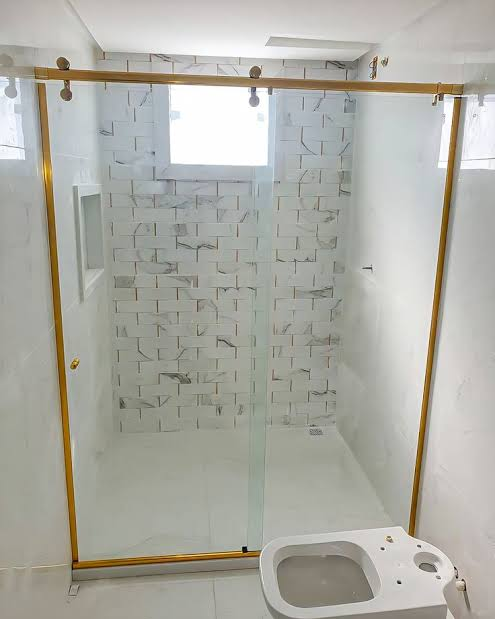
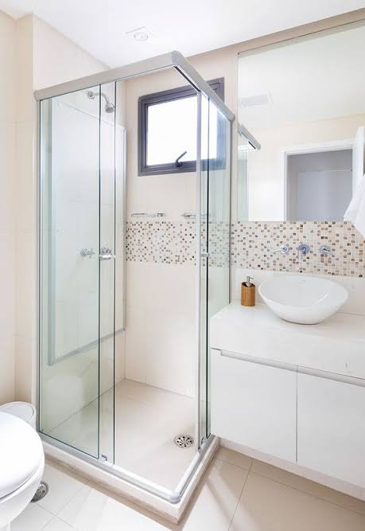
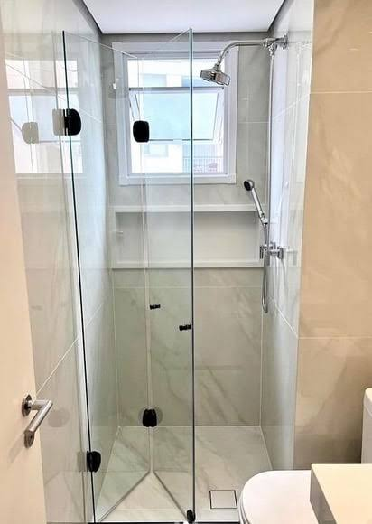
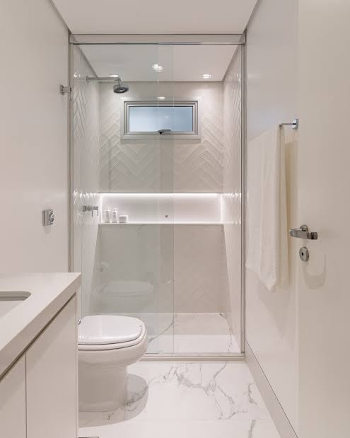

Página Institucional - Vidrolux Vidraçaria

Bem-vindo à Vidrolux!

Na Vidrolux, transformamos vidro em soluções inteligentes para residências e empresas. Combinamos elegância, segurança e modernidade em cada projeto, oferecendo serviços personalizados que atendem às necessidades do seu ambiente.

Quem Somos

Somos uma vidraçaria especializada em projetos residenciais e comerciais. Nossa missão é entregar qualidade, sofisticação e eficiência em cada instalação, com foco no acabamento perfeito e na satisfação do cliente.

Nos destacamos pela agilidade, compromisso e atendimento próximo. Seja para transformar um ambiente residencial ou modernizar um espaço comercial, a Vidrolux é sua parceira ideal.

Nossos Serviços

✅ Vidros Residenciais

Box para Banheiro sob medida

Espelhos decorativos e funcionais

Guarda-corpo para escadas e sacadas

Envidraçamento de áreas externas

✅ Vidros Comerciais

Fachadas em vidro para lojas e empresas

Divisórias internas com design moderno

Estruturas de vidro para espaços corporativos

Cada serviço é desenvolvido pensando em segurança, estética e durabilidade, utilizando materiais de alta qualidade e equipe especializada.

Por que escolher a Vidrolux?

Atendimento personalizado

Projetos sob medida

Compromisso com prazos e qualidade

Equipe técnica experiente

Soluções inovadoras em vidro

Entre em Contato

Deseja modernizar seu espaço ou tornar seu projeto mais elegante? Fale conosco e solicite um orçamento sem compromisso.

📲 [Botão WhatsApp: Solicitar Orçamento]

Vidrolux — Segurança e Elegância em Vidro para o Seu Projeto.


<div class="obj__modal">
                                  
                                    <div class="item__modal">
                                        
                                        <h2>Box Elegance</h2>
                                        <p class="texto-scroll">O Box Elegance é fabricado com vidro temperado de <strong>8mm</strong> ou <strong>10mm</strong>, garantindo alta resistência mecânica e térmica. 
                                            <br>Conta com sistema de perfis de alumínio ou inox de baixo perfil, proporcionando acabamento discreto e moderno. As roldanas de alta performance asseguram deslizamento suave, com opções de instalação nos modelos de correr ou abrir.
                                            O produto oferece excelente vedação, resistência à umidade e fácil manutenção.<br> 
                                            Ideal para projetos que exigem padrão elevado de acabamento, durabilidade e segurança em ambientes residenciais ou comerciais.
                                            Disponível em diversas cores de perfis e possibilidade de personalização conforme medidas específicas do cliente.</p>
                                        <button>Solicite seu orçamento</button>
                                    </div>

                                    <div class="item__modal">
                                        
                                        <h2>Box de Canto</h2>
                                        <p class="texto-scroll">O Box de Canto é desenvolvido para banheiros com layout em ângulo, oferecendo aproveitamento máximo do espaço com acabamento moderno e funcional. Produzido com vidro temperado de <strong>8mm</strong> ou <strong>10mm</strong>, esse modelo garante alta resistência mecânica, segurança e durabilidade.<br>
                                        <br>A estrutura conta com perfis em alumínio ou inox, com acabamento resistente à corrosão, disponível em diversas cores e estilos. O sistema de portas pode ser configurado conforme a necessidade do ambiente, com opções de correr ou abrir, proporcionando maior flexibilidade de uso.</p>
                                        <button>Solicite seu orçamento</button>
                                    </div>

                                    <div class="item__modal">
                                        
                                        <h2>Box Articulado</h2>
                                        <p class="texto-scroll">O Box Articulado, também conhecido como box sanfonado ou dobrável, é uma solução prática e funcional para banheiros que necessitam de melhor mobilidade e aproveitamento de espaço. Fabricado com vidro temperado de <strong>8mm</strong>, esse modelo oferece alta resistência, segurança e facilidade de uso.<br>
                                           <br>Sua estrutura conta com perfis em alumínio ou inox de alta durabilidade, com acabamento anticorrosivo e design discreto. O sistema articulado permite que as folhas se recolham lateralmente, liberando maior área de passagem, sendo ideal para banheiros compactos, ambientes adaptados ou com necessidades especiais de acesso.</p>
                                        <button>Solicite seu orçamento</button>
                                    </div>

                                    <div class="item__modal">
                                        
                                        <h2>Box de Canto</h2>
                                        <p class="texto-scroll">O Box de Canto é desenvolvido para banheiros com layout em ângulo, oferecendo aproveitamento máximo do espaço com acabamento moderno e funcional. Produzido com vidro temperado de <strong>8mm</strong> ou <strong>10mm</strong>, esse modelo garante alta resistência mecânica, segurança e durabilidade.<br>
                                        <br>A estrutura conta com perfis em alumínio ou inox, com acabamento resistente à corrosão, disponível em diversas cores e estilos. O sistema de portas pode ser configurado conforme a necessidade do ambiente, com opções de correr ou abrir, proporcionando maior flexibilidade de uso.</p>
                                        <button>Solicite seu orçamento</button>
                                    </div>

                                    <div class="item__modal">
                                        
                                        <h2>Box de Correr</h2>
                                        <p class="texto-scroll">O Box de Correr é uma das soluções mais práticas e versáteis para banheiros, ideal para ambientes que exigem otimização de espaço sem abrir mão da segurança e do acabamento moderno. Fabricado com vidro temperado de <strong>8mm</strong> ou <strong>10mm</strong>, esse modelo proporciona resistência mecânica, durabilidade e conforto no uso diário.<br>
                                        Sua estrutura conta com perfis em alumínio ou inox, com acabamento anticorrosivo, garantindo proteção contra umidade e longa vida útil. O sistema de abertura por deslizamento lateral oferece praticidade e eficiência, sendo uma excelente opção para banheiros compactos ou de médio porte.</p>
                                        <button>Solicite seu orçamento</button>
                                    </div>

                                <!-- Botões de navegação -->
                                <button class="carrossel-btn" id="prevBtn">⟵</button>
                                <button class="carrossel-btn" id="nextBtn">⟶</button>

                                </div>
